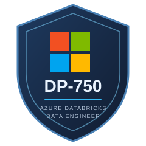

SQL
SQL & Data Modelling
Complex queries, joins, window functions, aggregations and data analysis.
Hello, I'm Ram Kumar
Data Engineering professional focused on building and transforming data pipelines with Azure Data Factory, Azure Databricks, PySpark and SQL.
01 / ABOUT
I work across data engineering workflows, from SQL-based data preparation to cloud ETL pipelines and Spark-based transformations.
My experience includes working on finance and healthcare-related data projects, developing Azure Data Factory pipelines, writing complex SQL queries, and using Databricks and PySpark for data processing.
This portfolio brings together selected professional contributions and independent learning projects. Each project is labelled so that production experience and learning work are clearly distinguished.
02 / TECHNICAL TOOLKIT
A practical overview of my data engineering technology stack.
Complex queries, joins, window functions, aggregations and data analysis.
ETL orchestration, pipeline activities, parameters and dynamic expressions.
Notebook-based processing and Lakehouse concepts for data transformation.
Data manipulation, distributed transformations and Spark DataFrame operations.
Cloud data storage concepts and file-based data lake workflows.
Version control and collaborative development practices for data projects.
03 / CERTIFICATIONS & CREDENTIALS
Professional certification in Azure Databricks data engineering.

CERTIFIEDExam DP-750 · Implementing Data Engineering Solutions Using Azure Databricks
View the official Microsoft Learn credential record using the verification link above.
03 / EXPERIENCE
Selected work, described according to the responsibilities performed.
HEALTHCARE DOMAIN
Data Engineering · Hospital Management
FINANCE DOMAIN
Data Engineering · SQL Development
04 / SELECTED PROJECTS
Professional contributions and independent learning projects are separated below.
Contributed to ETL processing for a hospital management project, including development of three pipelines using Azure Data Factory and Databricks.
Wrote complex SQL queries for a finance client project and supplied transformation logic to the ETL development team.
Completed a hands-on learning project using Spark and Unity Catalog, exploring notebook-based transformations and Lakehouse organization.
Course-based project exploring data pipeline implementation with Azure Data Factory. Add your detailed architecture and source details here.
Project descriptions are intentionally high-level. Add sanitized architecture diagrams, code samples and GitHub repository links before presenting any project as a public case study. Never upload client data or confidential code.
05 / CONTINUOUS LEARNING
Building knowledge of Delta Lake, Unity Catalog, managed and external tables, volumes and governance concepts.
Practising PySpark transformations, partitioning, joins, incremental processing and performance optimization.
Expanding practical knowledge of Azure data services and modern data platform architecture.
06 / CONTACT
Interested in Data Engineering opportunities or technical collaboration? Feel free to connect.